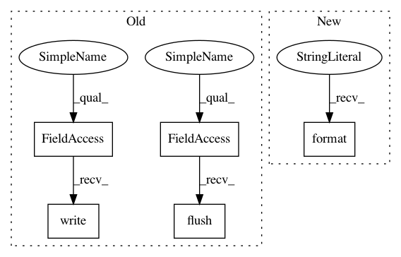

96008235c70ebd1fed4f65cb17b0e99046f99396,ilastik/workflows/carving/opPreprocessing.py,OpSimpleBlockwiseWatershed,execute,#OpSimpleBlockwiseWatershed#Any#Any#Any#Any#,170
Before Change
result_view = result[0,...,0]
with Timer() as watershedTimer:
if self.Input.meta.getTaggedShape()["z"] > 1:
sys.stdout.write("Blockwise Watershed 3D..."); sys.stdout.flush()
if not self.DoAgglo.value:
result_view[...] = vigra.analysis.watersheds(volume_feat[...])[0].astype(numpy.int32)
else:
result_view[...] = watershed_and_agglomerate(
volume_feat,
max_workers=Request.global_thread_pool.num_workers,
size_regularizer=self.SizeRegularizer.value,
reduce_to=self.ReduceTo.value)
logger.info( "done {}".format(numpy.max(result[...]) ) )
else:
if not self.DoAgglo.value:
result_view[...] = vigra.analysis.watersheds(volume_feat[:,:,0])[0].astype(numpy.int32)
else:
sys.stdout.write("Blockwise Watershed..."); sys.stdout.flush()
labelVolume = watershed_and_agglomerate(
volume_feat[:, :, 0],
max_workers=Request.global_thread_pool.num_workers,
size_regularizer=self.SizeRegularizer.value,
After Change
else:
result_view[...], max_id = vigra.analysis.watersheds(volume_feat[:,:,0])
logger.info( "done {}".format(max_id) )
logger.info( "Blockwise Watershed took {} seconds".format( watershedTimer.seconds() ) )
return result
In pattern: SUPERPATTERN
Frequency: 3
Non-data size: 5
Instances
Project Name: ilastik/ilastik
Commit Name: 96008235c70ebd1fed4f65cb17b0e99046f99396
Time: 2019-04-25
Author: c.pape@gmx.net
File Name: ilastik/workflows/carving/opPreprocessing.py
Class Name: OpSimpleBlockwiseWatershed
Method Name: execute
Project Name: inspirehep/magpie
Commit Name: e4488b9b68416439a226b48b74c22ae84c129db1
Time: 2016-02-10
Author: jan.stypka@cern.ch
File Name: magpie/api.py
Class Name:
Method Name: batch_train
Project Name: ilastik/ilastik
Commit Name: 96008235c70ebd1fed4f65cb17b0e99046f99396
Time: 2019-04-25
Author: c.pape@gmx.net
File Name: ilastik/workflows/carving/opPreprocessing.py
Class Name: OpSimpleBlockwiseWatershed
Method Name: execute
Project Name: vatlab/SoS
Commit Name: 0969d9c1f906008f4eee2eb414252429e535018a
Time: 2017-07-31
Author: ben.bog@gmail.com
File Name: src/sos/jupyter/sos_executor.py
Class Name:
Method Name: runfile